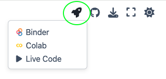

1. Libro electrónico#
“La imaginación es más importante que el conocimiento. El conocimiento es limitado, mientras que la imaginación abarca el mundo entero.” - Albert Einstein
Esta sección introduce el uso de libros electrónicos, una herramienta clave para el estudio moderno. A lo largo de este recurso, encontrarás diversos tipos de mensajes como notas, tips, advertencias y explicaciones matemáticas. Cada uno está diseñado para mejorar tu comprensión y retención del material presentado, ofreciendo una experiencia de aprendizaje directa y centrada en el contenido. Este formato digital te permitirá interactuar con el material de manera efectiva, asegurando que cada concepto no solo sea comprendido sino también aplicable
1.1. Cuadros de mensajes#
A lo largo del libro se estarán usando un par de msj que debes tomar en cuenta:
Note
Nota Importante: Esto es una nota o aclaración.
Warning
Advertencia “Ten cuidado cuando…”
Antes de empezar
“Deberás de tener claras algunas cosas antes”
Tip para esta actividad
“Esto es un tip”
Desarrollo matemático
Aquí aparecerán un par de resultados matemáticos que te pueden ser útiles.
Atención
“…”
1.2. Ejecutar el código de python#
Este libro permite interactuar con el contenido. Seleccione la opción que le resulte más conveniente
Tip
Las páginas que poseen el símbolo de un cohete son notebooks interactivas y se pueden ejecutar directamente haciendo clic en alguna de las opciones que vienen:
1- Binder 2- Google Colab 3- Live Code

2. Introducción a Python#
Python es un lenguaje de programación poderoso y fácil de aprender. Aquí veremos dos conceptos básicos: comentarios y la función print().
2.1. Comentarios#
Los comentarios se utilizan para explicar el código. No se ejecutan. Se crean con el símbolo #, cuando este símbolo no es usado al inicio se interpreta como una línea de código a ejecutar y dependiendo del comando que se use es la acción que se realizará, por ejemplo, para imprimir en pantalla se puede emplear el comando print() y dentro escribirmos entre comillas el msj.
# Esto es un comentario
print("Hola, mundo")
2.2. Operaciones Aritméticas#
Algunas de las operaciones básicas que puedes realizar en Python son:
# Suma
print(5 + 3)
# Resta
print(10 - 2)
# Multiplicación
print(4 * 2)
# División
print(8 / 2)
# Módulo (resto de la división)
print(10 % 3)
# Potencia
print(2 ** 3)
# División entera
print(9 // 2)
2.3. Librerias#
Python ofrece una amplia gama de librerías estándar y de terceros, se importan con la palabra reservada import. Entre ellas, la librería math proporciona acceso a funciones matemáticas.
2.3.1. Uso de la librería math#
Para utilizar la librería math, primero es necesario importarla al inicio del código:
import math
Después de la importación, puedes acceder a sus constantes y funciones. Por ejemplo, math.pi es una constante que representa el valor de π, y math.sin() es una función que calcula el seno de un número (el argumento dentro de los paréntesis).
# Ejemplo utilizando math.pi y math.sin()
print("El seno de π es:", math.sin(math.pi))
# Ejemplo calculando la raíz cuadrada de 4 con math.sqrt()
print("La raíz cuadrada de 4 es:", math.sqrt(4))
2.3.2. Uso de la libreria numpy#
NumPy es una librería esencial en Python para el cálculo numérico, especialmente conocida por su eficiencia en operaciones con arrays y matrices.
Para utilizar numpy, primero debes importarla al inicio de tu código:
import numpy as np
Una vez importada, puedes aprovechar sus funciones y constantes. Por ejemplo, np.array para crear arreglos y np.sin para calcular el seno de los elementos de un arreglo.
# Crear un arreglo de numpy
arreglo = np.array([np.pi, np.pi/2, np.pi/4])
# Calcular el seno del arreglo
seno_arreglo = np.sin(arreglo)
print("El seno del arreglo es:", seno_arreglo)
# Calcular la raíz cuadrada de cada elemento en un nuevo arreglo
raiz_arreglo = np.sqrt([1, 4, 9])
print("La raíz cuadrada del arreglo es:", raiz_arreglo)
Note
Nota Importante: Si bien es cierto que numpy es muy poderoso para la manipulación de grandes cantidades de datos nosotros lo emplearemos principalmente con el fin de realizar gráficas de funciones y para ello es necesario importar el modulo matplotlib.pyplot.
2.3.3. Uso de la libreria matplotlib.pyplot#
Al igual que en los otros modulos, matplotlib.pyplot se debe importar al inicio del código, pero también incluyendo a numpy:
import numpy as np
import matplotlib.pyplot as plt
Luego, se pueden crear datos para graficar y se utilizan las funciones de matplotlib para crear una gráfica (plot, title, xlabel, ylabel, show, etc).
Por ejemplo, para graficar una función seno:
x = np.linspace(0, 2 * np.pi, 100)
y = np.sin(x)
plt.plot(x, y)
plt.title("Función Seno")
plt.xlabel("x")
plt.ylabel("sin(x)")
plt.show()
Con numpy se crean 100 puntos entre 0 y 2π que serán evaluados en la función y=sin(x). Con plot indicamos las variables a graficar, title y label asignamos etiquetas al gráfico y con show se muestra el gráfico.
2.4. Citations#
You can also cite references that are stored in a bibtex file. For example,
the following syntax: {cite}`holdgraf_evidence_2014` will render like
this: [HdHPK14].
Moreover, you can insert a bibliography into your page with this syntax:
The {bibliography} directive must be used for all the {cite} roles to
render properly.
For example, if the references for your book are stored in references.bib,
then the bibliography is inserted with:
Christopher Ramsay Holdgraf, Wendy de Heer, Brian N. Pasley, and Robert T. Knight. Evidence for Predictive Coding in Human Auditory Cortex. In International Conference on Cognitive Neuroscience. Brisbane, Australia, Australia, 2014. Frontiers in Neuroscience.